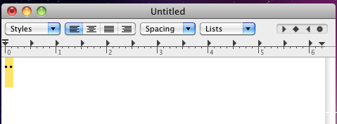
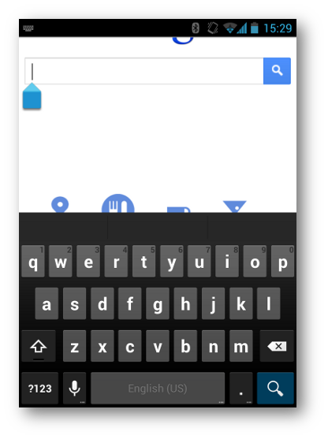
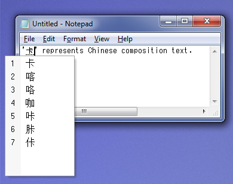
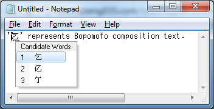
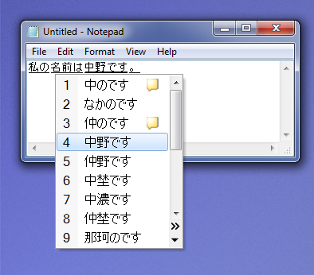
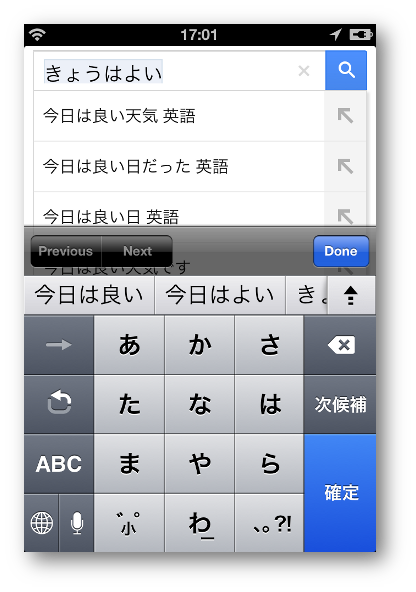

This specification defines an “IME API” that provides
Web applications with scripted access to an IME
(input-method editor) associated with
a hosting user agent. This IME API includes:
An InputMethodContext interface, which provides
attributes, events, and methods to interact
with current UI state of IME.
This API is designed to be used in conjunction with DOM events
[DOM-LEVEL-3-EVENTS].
Status of This Document
This section describes the status of this document at the time of its publication.
Other documents may supersede this document. A list of current W3C publications and the
latest revision of this technical report can be found in the W3C technical reports index at
http://www.w3.org/TR/.
This document is a proposal that is being made available for public
review in order to solicit feedback, particularly from
implementors, with a goal of potential cross-browser implementation
and standardization.
This document was published by the Web Applications Working Group as a Working Draft.
If you wish to make comments regarding this document, please send them to
public-webapps@w3.org
with [ime-api] at the start of the subject header
(subscribe,
archives).
All comments are welcome.
Publication as a Working Draft does not imply endorsement by the W3C
Membership. This is a draft document and may be updated, replaced or obsoleted by other
documents at any time. It is inappropriate to cite this document as other than work in
progress.
Even though existing Web-platform APIs allow developers to implement
very complicated Web applications, such as visual chat applications or
WYSIWYG presentation editors, developers have difficulties when
implementing Web applications that involve
input-method editors.
To mitigate the difficulties,
the DOM
Level 3 Events specification[DOM-LEVEL-3-EVENTS]
introduces composition events
to retrieve composition text
while it is being composed in an associated IME.
However, Web applications can still run into difficulties
interarcting with IME, such as detecting any UI overlap between
IME candidate window and its
underlying UI elements.
To solve the IME-related problems, this specification introduces
an IME API that allows Web applications to interact with the IME.
This specification introduces InputMethodContext interface.
For other possible improvements for interacting with IME, please
refer the IME API annex document
as a non-normative reference.
Consider the following example.
This example is a simple web search page which gives a user
search query suggestions while the user is doing composition.
This example code hides the suggestion box when IME candidate window
may overlap with it.
Example 1
<!DOCTYPE html><html><head><styletype="text/css">#search0 {
max-width:400px;}#input0 {
width:100%;}#suggest0 {
width:100%;
list-style: none;
margin:0;
padding:0;
border-style: solid;
border-width:1px;
border-color:#000;}</style><scriptlanguage="javascript"type="text/javascript">function init(){var node = document.getElementById('input0');// This code only handles the compositionupdate event for brevity of the// example, but of course other input field changes should also be handled.
node.addEventListener('compositionupdate', onCompositionUpdate,false);// Register handlers for candidate window appearance change.var ctx = node.inputMethodContext;
ctx.addEventListener('candidatewindowshow', onCandidateWindowShow,false);
ctx.addEventListener('candidatewindowhide', onCandidateWindowHide,false);}// Sends an XHR request to get search suggestions.// Upon receiving the result, expandSuggest() is called back.function getSuggests(query){// For brevity, implementation of this function is omitted.}function expandSuggest(candidates){// Callback after getting search suggestions.var suggest = document.getElementById('suggest0');var i;// Clear old suggestions.for(i =0; i < suggest.childNodes.length; i++){
suggest.removeChild(suggest.childNodes[0]);}// Render new suggeston list.for(i =0; i < candidates.length; i++){
suggest.appendChild(document.createElement('li'));
suggest.childNodes[i].textContent = candidates[i];}}function onCompositionUpdate(event){var query = document.getElementById('input0').value;
getSuggests(query);}// Hides suggest window once IME candidate window is shown.function onCandidateWindowShow(event){var suggest = document.getElementById('suggest0');
suggest.style.display ='none';}// Unhides suggest window once IME candidate window is closed.function onCandidateWindowHide(event){var suggest = document.getElementById('suggest0');
suggest.style.display ='';}</script></head><body><divid="search0"><inputtype="text"id="input0"placeholder="search here"><ulid="suggest0"></ul></div></body></html>
2. Background: What’s an Input Method Editor?
This section is non-normative.
An IME (input-method editor) is an application
that allows a standard keyboard (such as a US-101 keyboard) to be used
to type characters and symbols that are not directly represented on the
keyboard itself. In China, Japan, and Korea, IMEs are used ubiquitously
to enable standard keyboards to be employed to type the very large
number of characters required for writing in Chinese, Japanese, and
Korean.
On platforms with touch-based input device such as mobile phones,
an IME also plays a role to type text that a simple on-screen keyboard
cannot type directly.
A system IME is an IME already installed
on a user's system.
A composer is a context-free parser that
composes non-ASCII characters (including phonetic characters) from
keystrokes, e.g. Hiragana or Pinyin.
A converter is a context-sensitive parser
that looks up a dictionary to convert phonetic characters to
a set of ideographic characters, e.g. Kanji.
An IME clause is a grammatical word
produced in an IME.
An IME selected clause is an
IME clause currently being converted by
an IME.
An IME composition
is an instance of text produced in an IME. For IMEs that can produce
multiple words, an IME composition consists of multiple IME clauses.
For IMEs that produce only one word, an IME composition is equal to an
IME clause.
When an IME receives keystrokes, it sends the keystrokes to a
composer and receives phonetic characters matching to the keystrokes.
When an IME receives phonetic characters from a composer, it sends the
phonetic characters to a converter and receives the list of ideographic
characters matching to the phonetic characters. The following figure
shows the basic structure of an IME.
A phonetic composer composes a phonetic
character from its ASCII representation.
A radical composer composes a
phonetic character from phonetic radicals.
A phonetic radical is a character
component of a Latin character, a Chinese character, or a Korean
character. A Latin character can consist of an ASCII character and
accent marks, e.g. the character ‘á’ consists of
the ASCII character ‘a’ and the accent mark
‘´’. A Chinese character can consist of Chinese
character components that refer to its semantic origins, e.g. the
Chinese character ‘略’ consists of two components
‘田’ and ‘各’. A Korean
character consists of Korean character components that represent
consonants or vowels, e.g. the Korean character
‘가’ consists of the consonant
‘ㄱ’ and the vowel ‘ㅏ’.
An IME usually shows the text being composed by a composer with its
own style to distinguish it from the existing text. Even though most
of composers output phonetic characters, some composers (such as
Bopomofo composers) output a placeholder character
instead of phonetic characters while composing text.
2.1.1 Phonetic Composer
Phonetic composers are not only used for typing Simplified
Chinese and Japanese, but also used for typing non-ASCII
characters (such as mathematical symbols, Yi, Amharic, etc.) with
a US-101 keyboard. Each of these languages has a mapping table
from its character to a sequence of ASCII characters representing
its pronunciation: e.g.,
‘か’ to ‘ka’ in Japanese, and;
‘卡’ to ‘ka’ in Simplified Chinese.
This mapping table is called as Romaji for Japanese and Pinyin for
Simplified Chinese, respectively. A phonetic composer uses these
mapping tables to compose a phonetic character from a sequence of
ASCII characters produced by a US keyboard.
An example of a phonetic composer for Simplified Chinese outputs
the ASCII characters that were input by the user, as its
composition text.
Fig. 2Composition text (Simplified Chinese)
On the other hand, a typical phonetic composer for Japanese
outputs phonetic characters when the typed ASCII characters have
corresponding phonetic characters.
Fig. 3Composition text (Japanese)
An example of a phonetic composer for mathematical symbols
outputs composed mathematical symbol and shows the source
keystrokes in its own window, which is an example of a composition
window.
Fig. 4Composition text (Latex input)
2.1.2 Radical Composer
Radical composers are mainly used for typing Traditional
Chinese and Korean with phonetic keyboards. Each phonetic
keyboard of these languages can produce phonetic radicals:
e.g., typing ‘r’ produces ‘ㄱ’
on a Korean keyboard; typing ‘o’ produces
‘人’ on a Traditional-Chinese (or Bopomofo)
keyboard, etc. A radical composer composes a phonetic
character from phonetic radicals given by these keyboards:
e.g., typing ‘ㄱ’ (r) and ‘ㅏ’
(k) produces ‘가’ on a Korean keyboard;
typing ‘人’ (o), ‘弓’ (n), and
‘火’ (f) produces ‘你’ on a
Traditional-Chinese keyboard, etc.
A radical composer for Korean outputs the phonetic radicals as
its composition text.
Fig. 5Radical composer (Korean)
A radical composer for Traditional Chinese outputs a
placeholder character (U+3000) and shows the phonetic radicals
being composed to its own window. This window is an example
of a composition window.
Fig. 6Radical composer (Traditional Chinese)
Some platforms (such as Mac and Linux) use radical composers
for typing accented characters used in European countries.
For example,
typing ‘ ̈ ’ (option+u) and ‘a’ (a)
produces ‘ä’ on US keyboards of Mac.

Fig. 7Radical composer (Mac)
2.1.3 On-Screen Keyboard
On touch-based platforms without hardware keyboard like
mobile phone or tablet platforms, some kind of on-screen keyboard
is displayed to help a user typing text, which occupies some
part of the screen. A user uses this keyboard to type composition
text.

Fig. 8An example of an on-screen keyboard (English)
The layout of an on-screen keyboard may vary depending on
language or its input modality (e.g. a telephone number
input field requires number buttons only).
Fig. 9An example of an on-screen keyboard (Japanese)
2.2 Converter
A converter is a context-sensitive parser used for replacing
the outputs of a composer to ideographic characters on Chinese,
Japanese, and Korean.
Note
Korean seldom uses ideographic characters.
Because Chinese, Japanese, and Korean have many homonyms, each
sequence of phonetic characters usually matches many ideographic
characters: e.g., a Japanese
phonetic character ‘か’ matches Japanese
ideographic characters
‘化’, ‘科’,
‘課’,
etc.; Pinyin characters ‘ka’ matches Simplified-Chinese
ideographic characters ‘卡’,
‘喀’,
‘咯’, etc.; Bopomofo characters
‘人弓’ matches Traditional-Chinese
ideographic characters ‘乞’,
‘亿’, ‘亇’, etc.
A converter looks up a dictionary and shows a list of
candidates of possible ideographic characters so a user can choose
one. This list is known as a candidate
list.
A candidate list is known as a candidate
window when it has its own window.
Some Japanese IMEs show annotations in its
candidate window
for a character that is not so easy to distinguish from other
characters (such as full-width alphabets, full-width Katakanas,
and half-width Katakanas, etc.), as shown in the following
figure.
Fig. 10Candidate window (Japanese)
The next figure shows a candidate
window of a Simplified-Chinese IME.

Fig. 11Candidate window (Simplified Chinese)
And the next figure shows a candidate
window of a Traditional-Chinese IME.

Fig. 12Candidate window (Traditional Chinese)
Some techniques are used to improve conversion quality.
For example, a converter integrates an MRU
(Most-Recently Used) list.
Even though there are many ideographic characters for each phonetic
character (or phonetic radical), a user does not usually use all
these ideographic characters. A converter uses an
MRU list to filter out ideographic characters not
used so often from a candidate list.
Another example is a grammar parser. A converter that
integrates a grammar parser splits the given phonetic characters
into grammatical clauses and converts only one clause at a time.
When a sequence of phonetic characters consists of n clauses and the
i-th clause has m_i candidates, the total number of the candidates
for the input characters becomes (m_1 * m_2 * … * m_n).
To reduce the number of candidates owned by a converter,
a converter usually processes one clause at a time. This clause is
called the selected clause.
An IME usually renders a selected
clause with a special style to distinguish it from other
clauses, as shown in the following figure.

Fig. 13Selected clause (Japanese)
When a converter converts two or more clauses, it chooses
candidates for the selected clause so it becomes grammatically
consistent with the surrounding clauses:
e.g., Japanese converters usually output
‘危機一髪’ (not
‘危機一発’)
for Japanese phonetic characters
‘ききいっぱつ’
because
‘危機一発’ is grammatically
incorrect.
On a mobile platform, candidates may not appear in a separate
window, but occupy some part of the screen for the user to choose
the candidate word that they intend as a part of on-screen keyboard.
Fig. 14Composition on mobile platform (Japanese)

Fig. 15Composition on mobile platform (Japanese)
3. Conformance
As well as sections marked as non-normative, all authoring guidelines, diagrams, examples,
and notes in this specification are non-normative. Everything else in this specification is
normative.
The key words MUST, MUST NOT, REQUIRED, SHOULD, SHOULD NOT, RECOMMENDED, MAY,
and OPTIONAL in this specification are to be interpreted as described in [RFC2119].
Implementations that use ECMAScript to implement the APIs defined in
this specification must implement them in a manner consistent with
the ECMAScript Bindings defined in the Web IDL specification
[WEBIDL], as this specification uses that specification and
terminology.
4. Terminology and Algorithms
To be written.
5. The inputMethodContext property
Authors can get an object which implements the
InputMethodContext
interface on an editable
element, which can get keyboard input first
(i.e. a “target” element).
If this property is accessed
on a non-editable element, a user agent SHOULD
return a context for the innermost editable or focusable element
to the element. In this case, the target property
in the InputMethodContext
interface points to the target element.
If all ancestors of an element are neither editable nor focusable,
this property returns null.
To control the IME attached to an element, it is a good idea to add
this property to the HTMLElement interface.
To change the behavior of the IME associated with an
element, authors MUST first obtain an InputMethodContext
interface from the inputMethodContext property of
the HTMLElement interface.
The returned InputMethodContext interface MAY not be directly
associated to the element. An interface MAY be shared
among elements under an innermost editable or focusable element.
In that case, target property in the
InputMethodContext interface points to the element which owns
the interface.
compositionEndOffset of type unsigned long, readonly
Represents the ending offset of the composition,
in a similar way to compositionStartOffset.
compositionStartOffset of type unsigned long, readonly
Represents the starting offset of the composition relative to
the target if a composition is occurring, or 0 if there is no
composition in progress. For composition occurring on an
<input> or <textarea>
element, the
compositionStartOffset is the starting offset of
the composition within the target's value string.
For compositions occurring on an element with the
contentEditable
flag set, then this is the starting offset relative to the
target's textContent property (textContent is a
linear view of all the text under an element).
oncandidatewindowhide of type EventHandler,
This event should be fired after the candidate window is fully
hidden (after the dismissal animation has ended, if there is any).
The event handler code will see that no ClientRect can be obtained
inside this handler.
oncandidatewindowshow of type EventHandler,
This event should be fired immediately after the IME
candidate window is set to appear, which means immediately after
the position information for the candidate window has been
identified.
Common things among oncandidatewindowshow/update/hide events:
To get a better performance, these events are of the generic
"Event" interface and fired directly to the
InputMethodContext object. They do not bubble or capture
through the DOM tree.
Event handlers for these events will be able to use the
"this" property of the event, or event.target /
event.currentTarget to refer to the InputMethodContext
object upon which the event is firing.
These events are not cancellable, meaning that the appearing
of the candicate window cannot be controlled via these events
by cancelling them.
Web applications need only register for these events once
per element (the handlers will remain valid for as long as
the element is alive.
oncandidatewindowupdate of type EventHandler,
This events should be fired after either:
The IME candidate window has been identified as needing to
change size (but before animating to the new position) as a
result of displaying new/changed alternatives or predictions.
The IME candidate window has been identified as needing to
change size (but before animating to the new position) due to
user-zoom, browser frame resize, or other action that changes
the candidate window placement.
In either case, the event should be fired after the new
size/location of the candidate window is known by the user agent.
Once a target element gets deleted or modified not to accept
any input, any access to the
InputMethodContext
interface through the object has no effect. Any method calls
will just return, accesses to target will return
null.
6.2 Methods
getCandidateWindowClientRect
An web application may use this information to explicitly control
the position for its own input-related UI elements, such as search
suggestions.
Note: client coordinates are in document pixels and have origin
at the upper-left corner of the client area.
No parameters.
Return type: ClientRect
7. Best Practices
This section is non-normative.
This specification provides an interface for developing IME-aware
Web applications.
This section describes practices for some use-cases.
7.1 Life of InputMethodContext
Once a InputMethodContext interface is obtained,
it should be valid for the lifetime of its target
element's lifetime, as long as the element is editable or focusable.
Once the target gets disabled,
authors MAY NOT access an IME through the interface even after the
target gets enabled again. Once the target is deleted,
any access to the interface is void.
Any access to the InputMethodContext interface makes sense
mostly when the target element has focus. In other words,
it makes little sense if you access the interface when the target
element doesn't have focus.
8. Acknowledgements
The editors would like to thank Brendan Elliott, Jianfeng Lin, and Travis Leithead for their technical feedback and assistance.
A. Revision History
The following is an informative summary of the changes since
the last publication of this specification.
A complete revision history of the
Editor's Drafts of this specification can be found
here.
Split the draft into 2 parts: the main part (this document) and annex.
The following pieces are put into the annex:
Drawing IME candidates in Javascript
CompositionEvent interface extension (segment information etc.)
setCaretRectangle() API
Delivering IME related events to non-editable elements
confirmComposition() (not used for overlapping UI usecase)
locale (further refinements required)
Example/use cases/best practices
Modified example1 code (suggest UI) to use the new candidatewindow events.
Fixed some ReSpec warnings (no visible change).
API
Added oncandidatewindow{show,update,hide} events and
getCandidateWindowClientRect(), as proposed by Microsoft,
except
isCandidateWindowVisible() is dropped due to redundancy.
mentions about synchronousness are dropped due to consideration for
implementability on non-Windows platform.
(although this does not mean discouraging synchronous implementation.)
Added compositionStartOffset/compositionEndOffset to InputMethodContext,
as proposed by Microsoft.